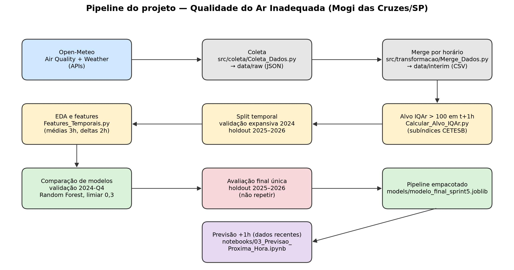
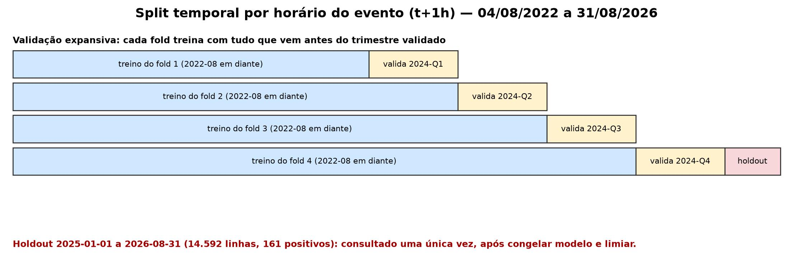
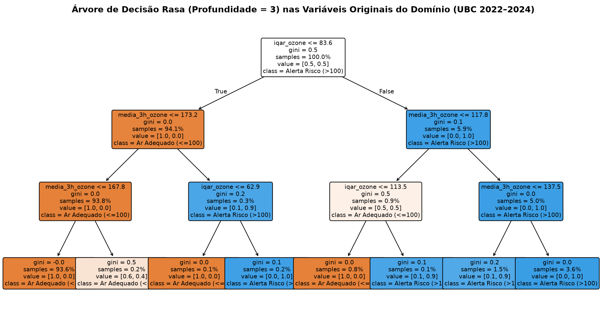
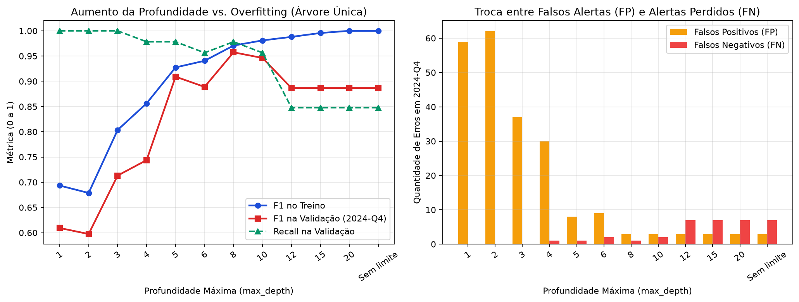
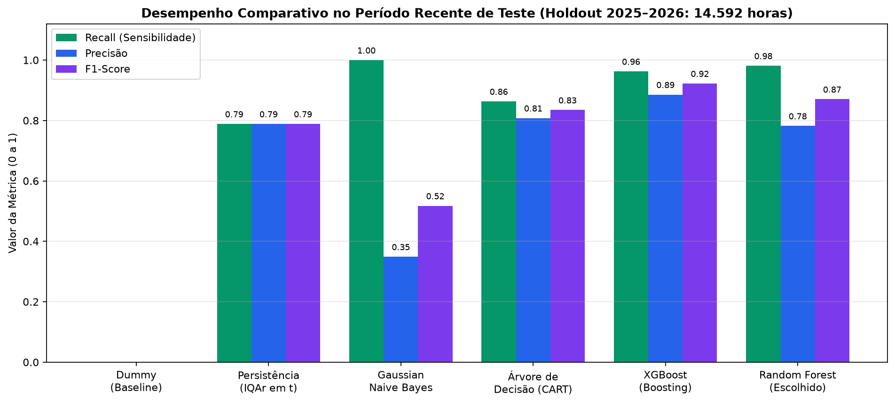
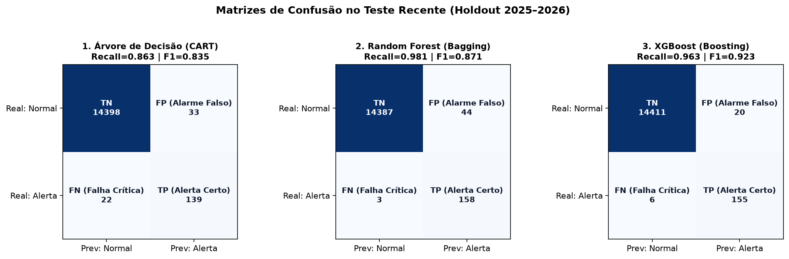
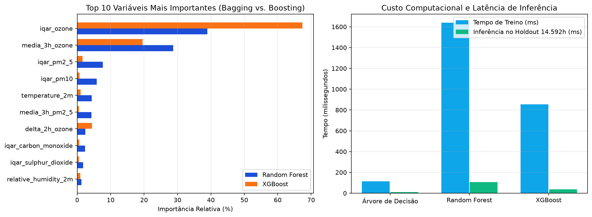

1. Equipe de Desenvolvimento
Artigo técnico e sistema desenvolvidos na disciplina de Ciência de Dados e Aprendizado de Máquina (2026/2) — Universidade Braz Cubas (UBC), Mogi das Cruzes – SP.
2. Introdução: Quando um Dia de Sol Esconde Risco Respiratório
Imagine uma tarde ensolarada de setembro às 16h no campus da Universidade Braz Cubas (UBC), em Mogi das Cruzes – SP. O céu parece limpo, turmas de Educação Física iniciam treinos ao ar livre, mas a combinação de calor intenso, radiação solar e vento fraco acelerou reações fotoquímicas na baixa atmosfera. Em menos de uma hora, a concentração de ozônio troposférico (O3) faz o Índice de Qualidade do Ar (IQAr) ultrapassar 100 pontos — limite técnico em que a CETESB classifica o ar como Inadequado (Ruim, Muito Ruim ou Péssimo).
Se você já programa em Python usando if/else, laços e listas, mas está dando os primeiros passos
em Aprendizado de Máquina, este artigo foi escrito para você. Aqui vamos construir e comparar três dos
algoritmos mais importantes da ciência de dados para problemas tabulares: a Árvore de
Decisão, a Random Forest e o XGBoost.
- Como transformar séries horárias de poluentes e clima em um problema de classificação binária (quando o modelo responde apenas Sim/1: emitir alerta ou Não/0: ar adequado);
- Por que dividir séries temporais por sorteio aleatório causa vazamento de dados (data leakage) (usar informação do futuro para prever o passado);
- Como funciona uma Árvore de Decisão por dentro, por que a Random Forest (bagging) reduz a variância e por que o XGBoost (boosting) reduz o viés;
- Qual dos três modelos venceu o nosso experimento real de 14.592 horas inéditas e por que a escolha depende diretamente do custo de um alarme que falha.
3. Dados Abertos, Alvo CETESB e Pipeline sem Vazamento Temporal
Coletamos 35.736 observações horárias (de 04/08/2022 a 31/08/2026)
integrando duas APIs públicas sem necessidade de chave paga: a Open-Meteo Air Quality API
(modelo global CAMS/ECMWF para 6 poluentes: PM10, PM2,5, CO, NO2,
SO2 e O3) e a Open-Meteo Historical Weather API (temperatura a 2m,
umidade relativa, precipitação, velocidade do vento e pressão ao nível do mar).
Para definir matematicamente a classe positiva sem arbitrariedade, aplicamos a metodologia oficial da
Tabela 2.7 da CETESB (2025): cada poluente recebe um subíndice por interpolação linear em sua
respectiva janela móvel (24h para PM10, PM2,5 e SO2; 8h para O3 e
CO; 1h para NO2), e o IQAr consolidado é o maior dos seis subíndices. Nosso horizonte
é estrito de 1 hora à frente (t + 1h): usando apenas atributos conhecidos até a
hora t, queremos prever se IQAr(t + 1h) > 100.

O perigo do vazamento temporal e a nossa divisão cronológica
Em qualidade do ar, a medição das 15h é muito parecida com a das 14h e a das 16h. Se embaralhássemos os dados aleatoriamente (75% sorteados para treino e 25% para teste), o modelo treinaria com as horas 14h e 16h do mesmo dia para "prever" as 15h — trapaceando com informações do futuro. Por isso, aplicamos uma divisão estritamente cronológica:
- Desenvolvimento / Treino histórico (
04/08/2022a31/12/2024):21.121horas válidas, contendo743episódios positivos (3,52%). Dentro de 2024, usamos 4 trimestres de validação expansiva (2024-Q1a2024-Q4) para escolher atributos e hiperparâmetros (configurações externas definidas antes do treino, como número de árvores ou profundidade máxima). - Teste Final / Holdout (
01/01/2025a31/08/2026): os registros mais recentes (14.592horas, com161positivos = 1,10%), mantidos isolados e avaliados uma única vez.

4. Exemplo Pequeno na Prática (Antes da Matemática)
Antes de falar em fórmulas ou centenas de árvores, vamos olhar para 6 linhas ilustrativas (valores simplificados, construídos para imitar o padrão típico de uma tarde de ozônio alto em Mogi das Cruzes) no instante t e ver como nós mesmos criaríamos uma regra de alerta para a próxima hora (t + 1h):
| Hora (t) | iqar_ozone em t |
media_3h_ozone (µg/m³) |
temperature_2m (°C) |
iqar_pm2_5 em t |
Resultado Real em t + 1h |
|---|---|---|---|---|---|
| 09:00 | 31,0 | 42,0 | 20,4 °C | 22,5 | ✅ 0 (Ar Adequado) |
| 11:00 | 54,2 | 68,3 | 25,1 °C | 24,0 | ✅ 0 (Ar Adequado) |
| 13:00 | 89,5 | 112,0 | 28,6 °C | 27,1 | ⚠️ 0 (Quase subiu, mas vento dispersou) |
| 14:00 | 96,8 | 138,5 | 31,2 °C | 35,4 | 🚨 1 (Alerta: IQAr passou de 100 às 15h!) |
| 15:00 | 108,4 | 154,0 | 31,8 °C | 36,0 | 🚨 1 (Alerta: IQAr continuou > 100 às 16h!) |
| 21:00 | 45,0 | 59,0 | 19,8 °C | 18,2 | ✅ 0 (Ar Adequado) |
Repare no padrão: às 09h, 11h e 21h, o subíndice atual de ozônio (iqar_ozone) está abaixo de
84 e o ar seguinte é adequado. Já entre 13h e 15h, quando iqar_ozone passa de cerca
de 84, precisamos de uma segunda pergunta para desempatar: "A média das últimas 3 horas de
ozônio (media_3h_ozone) já passou de cerca de 118 µg/m³?" (são exatamente os cortes que a
árvore real aprendeu, como veremos na Figura 4). Se sim, o alerta dispara! Essa sequência hierárquica de
perguntas if/else aprendida automaticamente a partir dos dados é exatamente uma Árvore de
Decisão.
5. Árvore de Decisão (CART): Intuição, Regras e Overfitting
Uma Árvore de Decisão (implementada no scikit-learn pelo algoritmo CART —
Classification and Regression Trees) divide os dados recursivamente por meio de perguntas binárias
(Sim/Não) sobre as variáveis de entrada. Ela começa no nó raiz (toda a base de
treino), escolhe a variável e o ponto de corte que melhor separam as classes em dois nós
internos, e repete o processo até chegar às folhas, que entregam a classe prevista
ou a proporção de positivos.
Na Figura 4 abaixo, treinamos uma árvore rasa (max_depth=3) diretamente nas
variáveis originais do nosso domínio (2022–2024) para ler as regras que ela descobriu sozinha:

iqar_ozone <= 83,6: 94,1% das horas (ponderadas) caem no ramo
esquerdo, quase todo de ar adequado. No ramo direito (ozônio já alto), a árvore pergunta se
media_3h_ozone <= 117,8; quando a média recente passa desse valor, as folhas são
praticamente só de alerta. Com apenas 3 níveis, a árvore usou somente variáveis de ozônio — coerente com a
importância de atributos da Random Forest.
O problema da Árvore Única: Overfitting quando a profundidade cresce
Se deixarmos uma única árvore crescer sem limite de profundidade, ela continuará criando galhos até isolar cada hora específica de 2022–2024 em uma folha própria. Isso causa overfitting (sobreajuste): o modelo decora o ruído do passado e perde a capacidade de generalizar para meses futuros.
Medimos exatamente esse fenômeno variando max_depth de 1 até Sem limite
(que atingiu profundidade 19 e 80 folhas) na validação temporal
2024-Q4:

max_depth=8, a validação melhora; a partir de max_depth=12 até 19, o
F1 de treino atinge 1,0000 (memorização total), mas os Falsos Negativos na validação saltam de
1 para 7 (Recall cai de 97,8% para 84,8%).
📐 Caixa de Aprofundamento Matemático: Impureza de Gini vs. Entropia
Como a árvore escolhe se deve cortar em iqar_ozone <= 83,6 ou em
temperature_2m <= 29,0? Ela calcula uma medida de "mistura de classes" chamada
impureza. Seja p1 a proporção ponderada da classe positiva (Alerta) e
p0 = 1 − p1 a proporção da classe negativa em um nó m:
Quando um nó é 100% puro (só tem horas normais ou só tem horas de alerta), G(m) = 0. Em cada
divisão candidata, o algoritmo CART escolhe o atributo e o corte que maximizam a redução ponderada
de impureza (ΔGini) entre o nó pai e os dois nós filhos. Como nossa base tem apenas
3,52% de positivos no treino, usamos class_weight="balanced", que multiplica o
peso de cada exemplo positivo por N / (2 · Npos) ≈ 14,2 (uma razão de
27,4× em relação à classe negativa), impedindo que a árvore ignore os alertas raros.
6. Random Forest (Bagging): Como 300 Árvores Reduzem a Variância
Uma árvore única tem alta variância: pequenas mudanças nas semanas de treino mudam o corte do topo e alteram toda a cascata abaixo. Proposta por Leo Breiman (2001), a Random Forest resolve essa fragilidade combinando duas fontes de aleatoriedade controlada:
- Amostragem Bootstrap (Bagging — Bootstrap
Aggregating): cada uma das nossas
300árvores é treinada em uma amostra sorteada com reposição das21.121horas de treino (~63,2% das linhas originais entram em cada árvore; os ~36,8% restantes formam as amostras out-of-bag). - Subamostragem aleatória de atributos em cada nó (
max_features="sqrt"): em vez de testar todas as15variáveis em cada divisão, cada nó sorteia apenas⌊√15⌋ = 3variáveis candidatas. Isso descorrelaciona as árvores: se todas pudessem olhar para as 15 variáveis sempre, todas fariam o mesmo corte inicial emiqar_ozonee cometeriam os mesmos erros!
Na hora de prever se haverá risco em t + 1h, as 300 árvores emitem suas probabilidades em paralelo e
o modelo calcula a média. No nosso projeto, congelamos na validação o limiar 0,30: basta que a
probabilidade média da floresta atinja 30% para o alerta preventivo ser disparado.
📐 Caixa de Aprofundamento Matemático: Por que o Bagging reduz a variância?
Se tivermos B árvores identicamente distribuídas, cada uma com variância σ2 e correlação média entre pares ρ, a variância da média das B árvores é dada por (Breiman, 2001):
Var(Média de B árvores) = ρ · σ2 + [ (1 − ρ) / B ] · σ2
Quando aumentamos o número de árvores (B = 300), o segundo termo
(1 − ρ)/B · σ2 vai a zero! E ao sortear apenas 3 variáveis por nó
(max_features="sqrt"), diminuímos a correlação ρ entre as árvores, derrubando também
o primeiro termo. É por isso que a Random Forest estabiliza a decisão sem sofrer o colapso de variância da
árvore solitária.
7. XGBoost (Gradient Boosting): Árvores em Série Corrigindo Resíduos
Enquanto a Random Forest treina árvores independentes em paralelo, o XGBoost (Extreme Gradient Boosting, Chen & Guestrin, 2016) adota a filosofia oposta: o Boosting. As árvores são construídas em sequência:
- A Árvore 1 faz uma estimativa inicial simples;
- A Árvore 2 não tenta prever o alvo do zero: ela é treinada para prever os erros residuais (gradientes da função de perda) deixados pela Árvore 1;
- A Árvore 3 corrige o erro residual combinado das Árvores 1 + 2, multiplicando cada passo
por uma taxa de aprendizado (
learning_rate = 0,05) pequena para evitar passos bruscos; - Para evitar overfitting e lidar com os apenas
3,52%de positivos, o XGBoost aplica regularização explícita nas folhas (reg_lambda), profundidade curta (max_depth = 5) e o fator de balanceamentoscale_pos_weight = Nneg / Npos ≈ 27,4.
📐 Caixa de Aprofundamento Matemático: Função Objetivo Regularizada do XGBoost
Na rodada t, o XGBoost adiciona uma nova árvore ft(xi) para minimizar a função objetivo que soma o erro de classificação (log-loss) e um termo de penalidade Ω(ft) pela complexidade da árvore (número de folhas T e soma dos quadrados dos pesos wj das folhas):
ℒ(t) = ∑i=1..n l( yi , ŷi(t−1) + η · ft(xi) ) + γ·T + ½·λ·∑j=1..T wj2Usando expansão de Taylor de segunda ordem (gradiente gi e hessiana hi), o XGBoost calcula analiticamente o ganho de cada divisão e poda ramos que não superam o custo γ. Assim, o Boosting foca em reduzir o viés, refinando fronteiras difíceis passo a passo.
8. Quadro Comparativo Lado a Lado: Os Três Modelos
| Critério | Árvore de Decisão (CART) | Random Forest (Bagging) | XGBoost (Gradient Boosting) |
|---|---|---|---|
| Como funciona | Uma única árvore divide os dados recursivamente maximizando a redução de impureza de Gini. | 300 árvores profundas treinadas em paralelo com amostras bootstrap e sorteio de 3 atributos por nó; decisão por média de probabilidades. | 300 árvores rasas (max_depth=5) treinadas em sequência; cada árvore corrige os
gradientes de erro das anteriores com lr=0,05. |
| Efeito em Viés vs. Variância | Baixo viés se profunda, mas altíssima variância. | Reduz drasticamente a variância mantendo viés baixo. | Reduz o viés progressivamente e controla variância via regularização L2 e taxa de aprendizado. |
| Vantagens | Treino instantâneo, latência mínima e regras 100% transparentes em fluxograma. | Altíssima estabilidade temporal, excelente Recall (fração dos eventos reais de risco que o modelo conseguiu detectar) e robusta a ruído. | Maior precisão global e maior F1-Score; gera menos alarmes falsos (FP) em fronteiras ruidosas. |
| Desvantagens | Instável entre um ano e outro; perdeu 22 alertas reais no nosso holdout. | Menor precisão que o XGBoost (gera mais alarmes preventivos em tardes limítrofes) e maior tempo de inferência em lote. | Mais hiperparâmetros sensíveis; tendeu a ser mais conservador no limiar 0,30, perdendo o dobro de alertas reais em relação à Random Forest (6 FN vs. 3 FN). |
| Interpretabilidade | Alta (Caixa-branca): inspeção direta de cada nó e folha. | Média: auditável via importância global de Gini (feature_importances_)
e probabilidades do comitê. |
Média: auditável via ganho de informação (Gain) por atributo, mas a soma sequencial de 300 árvores não é lida como regra única. |
| Tempo de Treino / Latência | Treino: 0,12 s | Predição (14.592h): 11,5 ms |
Treino: 1,64 s | Predição (14.592h): 106,7 ms (≈0,007 ms por
linha) |
Treino: 0,86 s | Predição (14.592h): 38,3 ms (≈0,003 ms por
linha) |
| Risco de Overfitting | Alto se max_depth não for podado (memoriza o treino quando passa de 10
níveis). |
Baixo graças à média de 300 amostras bootstrap e min_samples_leaf=2.
|
Moderado (controlado por learning_rate=0,05,
subsample=0,8 e reg_lambda=1,0).
|
| Cenário Ideal | Explicação didática, dispositivos embarcados restritos ou triagem visual de regras. | Sistemas de alerta de saúde/segurança onde deixar passar um evento crítico (FN) custa muito caro. | Sistemas onde o custo de Falsos Positivos e Falsos Negativos é mais equilibrado e busca-se F1 máximo. |
9. Código Comentado em Python (Scikit-Learn e XGBoost)
Abaixo está o trecho central que constrói o nosso Pipeline isolando o pré-processamento dentro do
treino e instancia os três modelos de árvore com semente fixa (random_state=42). O código
completo e executável está em src/modelagem/Experimento_Arvores_Artigo.py e nos notebooks
em notebooks/.
Versões utilizadas no experimento: Python 3.13.7 ·
scikit-learn 1.9.1 (>=1.6.0) · xgboost 3.4.1 (>=2.0.0) ·
pandas 3.0.6 (>=2.0.0).
from sklearn.compose import ColumnTransformer
from sklearn.impute import SimpleImputer
from sklearn.pipeline import Pipeline
from sklearn.preprocessing import StandardScaler
from sklearn.tree import DecisionTreeClassifier
from sklearn.ensemble import RandomForestClassifier
from xgboost import XGBClassifier
# 1. Pré-processamento isolado: calcula mediana e desvio-padrão SOMENTE no treino
preprocessador = ColumnTransformer(transformers=[
("numericas", Pipeline([
("imputador", SimpleImputer(strategy="median")),
("escalador", StandardScaler()),
]), list(FEATURES_SPRINT4))
])
# 2. Os três modelos de árvore com tratamento para o desbalanceamento (3,52% positivos)
arvore_unica = Pipeline([
("pre_processamento", preprocessador),
("classificador", DecisionTreeClassifier(
max_depth=6, min_samples_leaf=5, class_weight="balanced", random_state=42
)),
])
random_forest = Pipeline([
("pre_processamento", preprocessador),
("classificador", RandomForestClassifier(
n_estimators=300, min_samples_leaf=2, class_weight="balanced",
max_features="sqrt", n_jobs=-1, random_state=42
)),
])
xgboost_model = Pipeline([
("pre_processamento", preprocessador),
("classificador", XGBClassifier(
n_estimators=300, max_depth=5, learning_rate=0.05,
subsample=0.8, colsample_bytree=0.8, scale_pos_weight=27.43,
reg_lambda=1.0, eval_metric="logloss", n_jobs=-1, random_state=42
)),
])
# 3. Treino no passado (2022–2024) e inferência com limiar protetivo 0,30 no período recente
random_forest.fit(X_treino, y_treino)
probabilidades = random_forest.predict_proba(X_teste)[:, 1]
alerta_previsto = (probabilidades >= 0.30).astype(int)10. Resultados do Experimento, Matrizes de Confusão e Latência
Por que a acurácia comum engana na Trilha B? Porque no período de teste (2025–2026),
98,90% das horas têm ar adequado (14.431 normais contra 161
críticas). O nosso DummyClassifier, que simplesmente chuta "Ar Adequado" o ano inteiro sem olhar
nenhum poluente, atinge 98,90% de acurácia, mas tem Recall = 0,0000 (falha nos 161 alertas
reais!). Por isso, avaliamos todos os modelos pelas métricas da classe positiva:
Recall, Precisão, F1-Score e contagem absoluta de
Falsos Negativos (FN) e Falsos Positivos (FP).
| Partição Temporal | Modelo Avaliado | Limiar | Recall (Pos) | Precisão (Pos) | F1-Score | TP | FP | FN | TN | Treino (s) | Predição Lote (ms) |
|---|---|---|---|---|---|---|---|---|---|---|---|
| Validação (2024-Q4) | dummy_prior (Baseline) |
0,50 | 0,0000 | 0,0000 | 0,0000 | 0 | 0 | 46 | 2.162 | 0,0015 s | 0,26 ms |
| Validação (2024-Q4) | persistencia_iqar_atual |
0,50 | 0,8043 | 0,8043 | 0,8043 | 37 | 9 | 9 | 2.153 | 0,0000 s | 0,44 ms |
| Validação (2024-Q4) | gaussian_naive_bayes |
0,50 | 1,0000 | 0,3866 | 0,5576 | 46 | 73 | 0 | 2.089 | 0,1006 s | 10,96 ms |
| Validação (2024-Q4) | arvore_decisao_cart (max_depth=6) |
0,30 | 1,0000 | 0,9020 | 0,9485 | 46 | 5 | 0 | 2.157 | 0,1344 s | 3,95 ms |
| Validação (2024-Q4) | xgboost_balanced (300 árv.) |
0,30 | 0,9565 | 0,9362 | 0,9462 | 44 | 3 | 2 | 2.159 | 1,3241 s | 12,37 ms |
| Validação (2024-Q4) | random_forest_balanced (300 árv.) |
0,30 | 1,0000 | 0,7797 | 0,8762 | 46 | 13 | 0 | 2.149 | 1,4000 s | 123,35 ms |
| Holdout (2025–2026) | dummy_prior (Baseline) |
0,50 | 0,0000 | 0,0000 | 0,0000 | 0 | 0 | 161 | 14.431 | 0,0020 s | 0,57 ms |
| Holdout (2025–2026) | persistencia_iqar_atual |
0,50 | 0,7888 | 0,7888 | 0,7888 | 127 | 34 | 34 | 14.397 | 0,0000 s | 0,90 ms |
| Holdout (2025–2026) | gaussian_naive_bayes |
0,50 | 1,0000 | 0,3492 | 0,5177 | 161 | 300 | 0 | 14.131 | 0,0679 s | 20,15 ms |
| Holdout (2025–2026) | arvore_decisao_cart (max_depth=6) |
0,30 | 0,8634 | 0,8081 | 0,8348 | 139 | 33 | 22 | 14.398 | 0,1152 s | 11,48 ms |
| Holdout (2025–2026) | xgboost_balanced (300 árv.) |
0,30 | 0,9627 | 0,8857 | 0,9226 | 155 | 20 | 6 | 14.411 | 0,8553 s | 38,28 ms |
| Holdout (2025–2026) | random_forest_balanced (Escolhido) |
0,30 | 0,9814 | 0,7822 | 0,8705 | 158 | 44 | 3 | 14.387 | 1,6390 s | 106,66 ms |



iqar_ozone +
media_3h_ozone domina a decisão (>67% da importância de Gini na floresta). Na direita, mesmo
o modelo mais pesado em inferência (Random Forest) leva apenas 106,7 ms para classificar
14.592 horas (≈0,007 ms por linha em lote).
11. Nossa Recomendação para o Alerta da UBC: Por que Escolhemos a Random Forest?
Olhando para a tabela do experimento, um leitor desavisado poderia perguntar: "Por que vocês não escolheram a Árvore de Decisão (que teve F1 de 0,9485 na validação) ou o XGBoost (que teve o maior F1 de 0,9226 no holdout)?". A resposta está nos pontos abaixo:
0,30
foi escolhida e congelada na Sprint 5,
comparando Dummy, Persistência, Naive Bayes, Regressão Logística e Random Forest somente na validação
2024-Q4. A Árvore de Decisão e o XGBoost
foram treinados depois, para este artigo, quando o holdout já tinha sido aberto. Por isso, a comparação deles
no holdout é ilustrativa
e não foi usada para trocar o modelo.
- Custo assimétrico dos erros: no Canvas e no RFC definimos que um Falso
Negativo (estudantes expostos sem aviso) é mais grave que um
Falso Positivo (transferir uma atividade para a quadra coberta). Na validação, o XGBoost
deixou passar
2 FN(Recall95,65%); a Random Forest teve0 FNe respeitou o teto de 3 episódios por semana nas 12 semanas. - Uma lição honesta sobre variância: se a Árvore de Decisão tivesse participado da seleção,
ela teria vencido na validação
(
0 FN, só5 FP, F10,9485contra0 FN,13 FP, F10,8762da Random Forest). Mas, no período seguinte (2025–2026), a mesma árvore caiu para Recall86,34%com 22 FN, enquanto a Random Forest ficou em98,14%(3 FN) e o XGBoost em96,27%(6 FN). Uma janela de validação curta (46 positivos) favorece um modelo instável — exatamente o problema que o bagging foi criado para reduzir. - Latência em produção: no nosso teste do dashboard, a previsão ao vivo levou cerca de
3,4 sno total, quase todo o tempo gasto nas chamadas às APIs. A inferência da Random Forest custa ≈0,007 mspor linha, então a diferença para o XGBoost (≈0,003 ms) é imperceptível para o usuário. - Auditoria e interpretabilidade: pela importância de Gini
(
feature_importances_),iqar_ozone(38,93%),media_3h_ozone(28,68%),iqar_pm2_5(7,67%),iqar_pm10(5,79%) etemperature_2m(4,33%) somam85,4%da importância total — algo que conseguimos explicar ao coordenador do campus. - Quando escolheríamos outro modelo: se o custo de alarmes falsos fosse tão alto quanto o
de alertas perdidos, o XGBoost (F1
0,9226, só20 FP) seria um candidato forte. Para confirmar isso de forma justa, seria preciso uma nova janela de teste ainda não vista.
12. Limitações Honestamente Documentadas, Links e Referências
- Dados atmosféricos de grade (CAMS / Open-Meteo) e não sensor físico dentro da UBC: fora da Europa, o modelo CAMS Global possui resolução espacial de ~45 km e resolução temporal nativa de 3 horas (interpolada para 1h pela API). Queimadas muito localizadas em um quarteirão não são vistas imediatamente pela grade.
- Onde a Random Forest ainda erra (3 FN e 44 FP no holdout): os 3 Falsos Negativos de
2025–2026 ocorreram em
27/12/2025 14h,28/12/2025 13he31/12/2025 15h(todos no fim de dezembro, no início da tarde). Todos os erros, com data e hora, estão emreports/modeling/sprint5_final_test_misclassified_cases.csv. - Hiperparâmetros fixos, sem busca sistemática: os três modelos usaram configurações
razoáveis e fixas (sem
GridSearchCV/TimeSeriesSplit). Um ajuste com esforço equivalente para todos poderia mudar a ordem entre eles. - Divisão temporal não é 75/25: o treino vai até 31/12/2024 (21.121 h, ~59%) e o teste cobre 2025–2026 (14.592 h, ~41%). A divisão continua estritamente cronológica; ela foi fixada na Sprint 2, antes de qualquer modelo.
- Projeções +7h e +24h são experimentais: a aplicação ao vivo em
streamlit_app.pyprojeta também o próximo turno (+7h) e o dia completo (+24h) aplicando o classificador sobre as concentrações previstas pela API Open-Meteo, o que embute a incerteza meteorológica de curto prazo.
Links Recomendados para Continuar Aprendendo (5 Leituras Selecionadas)
- Documentação Oficial do Scikit-Learn — Decision Trees: explica passo a passo o algoritmo CART, critérios de Gini/Entropia e poda por custo-complexidade com exemplos visuais.
- Guia de Ensembles do Scikit-Learn — Random Forests: detalha como o
bootstrap e o parâmetro
max_featuresreduzem a variância das árvores individuais. - Tutorial Oficial do XGBoost — Introduction to Boosted Trees: um dos melhores textos didáticos da web mostrando com desenhos como árvores somadas em série otimizam gradiente e regularização.
- Documentação da Open-Meteo Air Quality API (CAMS/ECMWF): referência técnica dos endpoints, poluentes horários e domínios de reanálise atmosférica utilizados no nosso coletor.
- StatQuest with Josh Starmer (Guias Visuais de Árvores, Random Forest e XGBoost): excelente recurso complementar para visualizar a construção de árvores folha por folha antes de mergulhar nas demonstrações formais.
Referências Bibliográficas Primárias
- BREIMAN, L. (2001). Random Forests. Machine Learning, v. 45, n. 1, p. 5–32. DOI: 10.1023/A:1010933404324.
- CHEN, T.; GUESTRIN, C. (2016). XGBoost: A Scalable Tree Boosting System. In: Proceedings of the 22nd ACM SIGKDD International Conference on Knowledge Discovery and Data Mining (KDD '16), p. 785–794. DOI: 10.1145/2939672.2939785.
- CETESB — Companhia Ambiental do Estado de São Paulo (2025). Relatório de Metodologia para Avaliação da Qualidade do Ar — Estrutura do Índice de Qualidade do Ar (IQAr), Tabela 2.7 e Seção 2.3, pp. 18–20. PDF Oficial.
- SANTOS, C. M. dos (2011). Índice de Qualidade do Ar e Dinâmica de Poluentes Urbanos. Universidade de Brasília (UnB). Repositório UnB.
- OPEN-METEO & COPERNICUS CAMS (2026). Global Atmospheric Composition Forecasts & ERA5 Historical Weather Reanalysis. Documentação Oficial.
ArPrev — Foco na Antecipação de Condições Inadequadas
Projeto acadêmico de Ciência de Dados e Aprendizado de Máquina (2026/2) · Universidade Braz Cubas (UBC)
Autores: Davi Gama, Diogo Barbosa, Eudenis Vieira, Gabriel Januário e João Pedro · ↑ Voltar ao Tópico 1 (Equipe de Desenvolvimento)